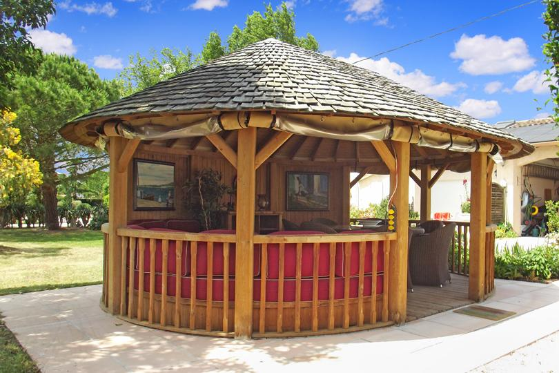

Anniversaire marquant, retrouvailles de famille, baptême ou simple envie de réunir ceux qu'on aime : il faut un lieu à soi, où l'on peut fêter sans déranger personne et où chacun peut dormir sur place. À 20 minutes de Toulouse, le Domaine des Six est pensé pour ces grands moments.
Un domaine rien que pour vous
En privatisant le domaine, vous profitez du parc arboré de 4 600 m², de la piscine plein sud, du kiosque et de la paillote pour recevoir vos invités en toute liberté, en intérieur comme en plein air.
Tout le monde dort sur place
Fini les départs précipités en fin de soirée : avec cinq logements indépendants (jusqu'à 15 personnes), la famille reste sur place et la fête se prolonge autour d'un petit-déjeuner au soleil. C'est l'idée même d'un gîte de groupe près de Toulouse : un seul lieu, plusieurs logements, et personne à raccompagner à la fin du repas.
- Petits et grands — parc clos de 4 600 m² en accès libre, grands espaces pour que les enfants s'amusent en sécurité.
- Convivialité — un cadre nature, avec vue sur les Pyrénées, qui change d'une salle des fêtes classique.
- Sérénité — pas de route après la soirée, tout le monde est logé sur place.
Recevoir dehors, sous la tente
Les repas et réceptions se tiennent en extérieur, sous une tente permanente installée dans le parc : de quoi asseoir une trentaine de convives à table, recevoir une cinquantaine de personnes en cocktail ou réunir un plus grand cercle pour un moment de fête. Vous restez libre du traiteur et de l'organisation du repas. La piscine plein sud et la paillote s'ajoutent en option, sur réservation, selon l'ambiance que vous voulez donner à la journée. Capacités et options sont détaillées sur notre page lieu de réception près de Toulouse.
Pour quelles occasions ?
Anniversaire (30, 40, 50 ans…), fête de famille, retrouvailles entre amis, baptême ou communion, départ en retraite : le lieu s'adapte à votre événement et à votre nombre d'invités. Pour une célébration plus intime, le domaine se prête aussi très bien à un mariage en petit comité près de Toulouse, dans le même esprit familial et sans contrainte.
Réservez votre date
Le Domaine des Six ouvre à la mi-janvier 2027, à 20 minutes au sud de Toulouse et à 11 km de Muret. Dites-nous votre date et le nombre de personnes : nous vous proposons une formule adaptée, hébergement et location d'espace compris.
Questions fréquentes
Peut-on loger toute la famille sur place ?
Où se passent le repas et la réception ?
À partir de quel tarif peut-on privatiser l'espace ?
À lire aussi
Nos logements
Ouverture mi-janvier 2027
Votre projet au domaine
Dites-nous votre date, le nombre de personnes et votre format : nous construisons la journée avec vous, sur devis.
Demander un devisTéléphone 06 98 20 02 08 · francois.leterrier.cmw@gmail.com